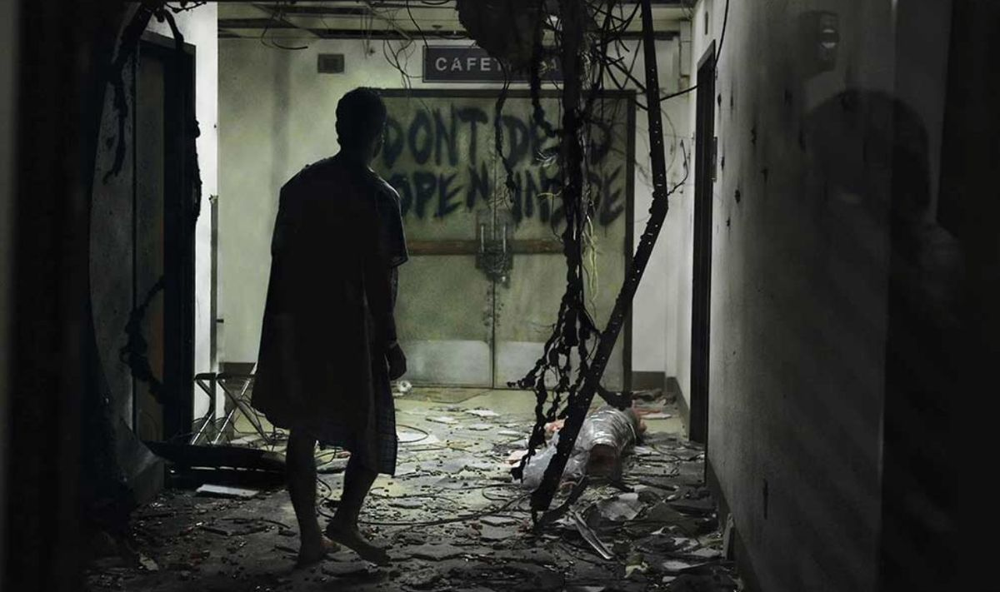

Popular Films by Type
Want to see every kind of zombie in action? Here's where to find each one on screen.
- Night of the Living Dead (1968): The original Shambler movie, and the blueprint every slow zombie film still follows.
- Dawn of the Dead (1978 / 2004): Shamblers overrun a shopping mall in the original, while the 2004 remake swaps them for full-on Runners.
- 28 Days Later (2002): The defining Runner movie, powered by the Rage virus instead of the undead.
- Train to Busan (2016): Runners at their most relentless, trapped with survivors on a high-speed train.
- White Zombie (1932): The very first Voodoo Zombie film, and the reason the word "zombie" exists in pop culture at all.
- The Last of Us: Fungal Zombies taken over by a Cordyceps-like infection, growing more monstrous the longer they're infected.
- Return of the Living Dead (1985): Thinkers who talk, reason, and specifically crave brains, unlike Romero's silent originals.
- Land of the Dead (2005): More Thinkers, this time organizing well enough to lead an attack on the living.
- Shaun of the Dead (2004): Classic Shamblers, played for laughs as the ultimate Comedy Zombie movie.
- Zombieland (2009): Fast, rule-breaking zombies in a film that never stops joking around.
- Resident Evil (2026): Director Zach Cregger's reboot follows a medical courier caught in a horrifying outbreak overnight, a back-to-horror-roots take on the T-Virus Zombie.
My Favorites
Out of everything the genre has to offer, three stand above the rest for me. Here's why each one earns a spot on my personal watchlist.
- Resident Evil (2026): Director Zach Cregger takes the franchise back to its horror roots, following a medical courier dragged into one nightmare of a night. A fresh start for the T-Virus Zombie, with none of the baggage from the earlier films.
- The 28 Days Later Saga: From the original outbreak to 28 Weeks Later and 28 Years Later, this series never lost its edge. The Rage virus turns ordinary people into Runners in seconds, and the saga keeps finding new angles on the same nightmare decades later.
- The Walking Dead: Proof that a zombie story can run for over a decade without running out of things to say. The infected are almost beside the point; the real horror is what survival does to the people left behind.

Is There a Cure?
Most zombie stories treat infection as a one-way street: once you're bitten, you're finished. A handful of films break that rule and dare to ask whether the outbreak could actually be reversed.
- 28 Days Later / 28 Weeks Later: The Rage virus burns through infected bodies so fast that starvation kills them before a cure is ever needed, hinting the infected could theoretically be saved if reached in time. In 28 weeks later we see the American army trying to regulate and control the rage virus, they even found an infected woman who did not seem to be fully effected by the virus. Before they could study it, things went south.
- 28 Years Later/28 Years Later Bone Temple: Picks up the question decades later, exploring what's left of the infected and uninfected and whether the virus has changed enough to be treatable. A doctor living out in the woods discovers a kind of treatmet to the virus induced psycosis. He also finds out the infected are still alive and concious.
- World War Z: Gerry discovers that injecting a host with a deadly but treatable pathogen makes them invisible to the infected, not a true cure, but the first real scientific foothold against the outbreak. With this, they were able to wipe out a large number of the infected.
- Resident Evil (games and films): The T-virus and its countless variants are engineered by Umbrella, which means an antidote is at least scientifically possible, even if it's rarely the main plot. In the 2026 Resident Evil we find that Bryan was supposed to deliver the antidote and Racoon City would've been contained, but things....once again went south.
- In the Flesh: A British series set after the outbreak is already cured, following reanimated people treated with medication and reintegrated into society, a rare "cure" story told from the other side.

Get Tickets
The new Resident Evil is out now! Grab your tickets below.
Get AMC Tickets